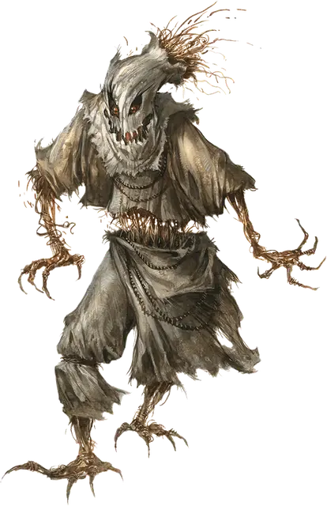

Пугало
Scarecrow
Средний Конструкт, хаотично-злой

Класс Доспеха 11
Хиты 36 (8к8)
Скорость 30 футов
| мод | спас | ||
|---|---|---|---|
| СИЛ | 11 | +0 | +0 |
| ЛОВ | 13 | +1 | +1 |
| ТЕЛ | 11 | +0 | +0 |
| мод | спас | ||
|---|---|---|---|
| ИНТ | 10 | +0 | +0 |
| МДР | 10 | +0 | +0 |
| ХАР | 13 | +1 | +1 |
Уязвимость к урону огонь
Сопротивление урону дробящий, колющий, рубящий от немагических атак
Иммунитет к урону яд
Иммунитет к состояниям паралич, очарование, отравление, истощение, испуг, бессознательность
Чувства тёмное зрение 60 футов, пассивное Восприятие 10
Языки понимает языки своего создателя, но не говорит.
Опасность 1 (200 опыта)
Бонус мастерства +2
Среда обитания Луг
Особенности
Обманчивая внешность. Пока пугало остается без движения, оно неотличимо от обычного, неоживленного пугала.
Действия
Мультиатака. Пугало совершает две атаки когтем.
Коготь. Рукопашная атака оружием: +3 к попаданию, досягаемость 5 футов, одна цель. Попадание: Рубящий урон 6 (2к4 + 1). Если цель — существо, она должна преуспеть в спасброске Мудрости Сл 11, иначе станет испуганной до конца следующего хода пугала.
Ужасающий взор. Пугало нацеливается на одно существо, которое видит в пределах 30 футов от себя. Если цель видит пугало, она должна преуспеть в спасброске Мудрости Сл 11, иначе станет магическим образом испуганной до конца следующего хода пугала. Пока цель испугана, она также парализована.
Описание
Во время сбора урожая, когда смерть снова навещает увядающий мир, а летние цветы склоняют свои засохшие головы, жуткие пугала безмолвно маячат на пустых полях. С бесконечным терпением они стойко стерегут свои посты, несмотря на ветра, шторма и наводнения, следуя указаниям своего хозяина. Они наводят ужас на жертв своим внешним видом и раздирают их острыми как бритва когтями.
Конструкты, движимые духом. Пугало оживает за счет привязанного к нему духа убитого злого существа, наделяющего его стремлениями и способностью двигаться. Именно благодаря жуткому внешнему виду пугало зарождает страх в тех, на кого падает его взгляд. Карги и ведьмы часто связывают пугала с душами демонов, но подойдет любой злой дух. Заточенный в пугале не помнит своей жизни, а его воля сосредоточена исключительно на служении создателю. Но даже при этом некоторые черты характера могут просачиваться наружу. В случае смерти создателя дух, заточенный в пугале, продолжает следовать последним командам создателя, пытается отомстить за его смерть или уничтожить себя.
Натура конструкта. Пугалу не нужен воздух, еда, питье и сон.